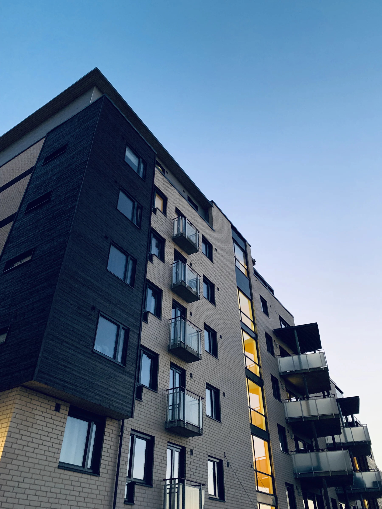
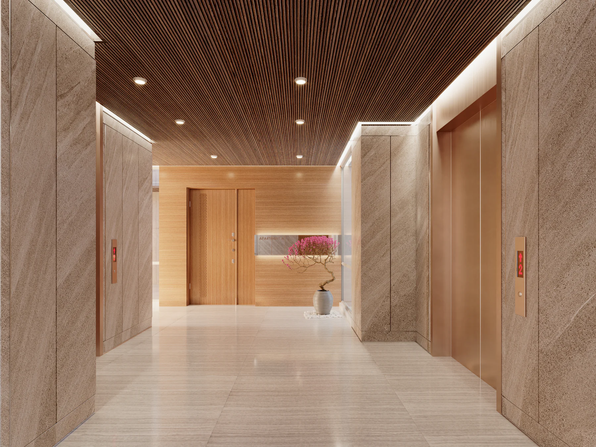

Conserjería saturada
Visitas, deliverys, residentes, proveedores y emergencias llegan al mismo punto de atención.
VIGILIA · MatIA
MatIA identifica, valida, clasifica y ejecuta decisiones de acceso en tiempo real — por citófono, por WhatsApp y por teléfono interno — con una sola inteligencia detrás de los tres canales. Hoy opera 24/7 en un edificio real, no es un prototipo.
IA local para edificios y condominios · En producción real

El problema

Visitas, deliverys, residentes, proveedores y emergencias llegan al mismo punto de atención.
Muchas autorizaciones ocurren verbalmente, sin evidencia clara ni historial consultable.
Citófonos, cámaras, llamados y apertura de puertas suelen operar como sistemas separados.
La solución
El sistema no busca mantener una conversación larga. Cada pregunta tiene un objetivo: identificar a la persona, validar autorización, clasificar el caso y ejecutar la acción correcta.
¿Quién es la persona que está en el acceso?
¿Tiene autorización para ingresar o debe contactar a un residente?
Visita, delivery, proveedor, residente, emergencia u otro caso.
Abrir, rechazar, llamar, registrar evento o escalar a un humano.
Hola, bienvenido. ¿A qué departamento se dirige?Identificar
Vengo a dejar un pedido para el 1204.
Gracias. Estoy consultando con el residente.Validar
Residente del 1204 confirmó por WhatsApp
Caso clasificado: DeliveryClasificar
Portón peatonal abierto · evento registrado con fotoEjecutar
Un solo cerebro, tres canales
Atiende a visitas y delivery en la puerta de acceso y en el estacionamiento, valida con el residente y abre en el momento — todo por voz, sin apretar botones.
Los residentes le escriben directo a MatIA: reservan amenidades, consultan paquetes, reportan un problema con foto o audio, o piden que le abran el portón a alguien — sin bajar a conserjería.
El personal del edificio tiene su propia línea directa con MatIA: registra novedades del turno dictándolas por voz, conecta con un departamento, o consulta información operativa al instante.
Para los residentes
Quincho, gimnasio, sala multiuso, sala de juegos — consulta disponibilidad y confirma la reserva en la misma conversación.
"Ábrele a Juan" — el residente autoriza el ingreso de una visita sin tener que estar físicamente en la puerta.
Autoriza con anticipación a alguien esperado, para que MatIA lo deje pasar directo sin llamar al departamento.
¿Llegó algo a mi nombre? MatIA revisa la conserjería y responde al instante.
El residente manda una foto o un audio contando el problema — MatIA lo entiende, deja la novedad registrada y genera el ticket de seguimiento automáticamente.
"¿Cuál es el horario de la piscina?" — MatIA responde directo desde el reglamento interno y de copropiedad del edificio, sin que el residente tenga que buscar el PDF.
Para conserjería y administración
| Hora | Depto. | Tipo | Decisión | Evidencia |
|---|---|---|---|---|
| 18:42 | 1204 | Delivery | Abierto | |
| 18:31 | 803 | Visita | Pre-registrada | |
| 18:17 | — | Proveedor | Escalado | |
| 18:05 | 1502 | Residente | Rostro validado |
Cada acceso, decisión y llamada queda registrado con foto y motivo — trazabilidad completa de quién entró, cuándo y por qué se autorizó.
Toda incidencia sin resolver se convierte en un ticket con numeración por departamento, con estado hasta que se cierra.
El conserje dicta la novedad por teléfono o WhatsApp y queda escrita — con traspaso de turno claro para el que sigue.
Registro de ingreso/salida de visitas, alertas de sobreestadía y gestión de tarjetas de acceso RFID.
Comunicados a todo el edificio, a un piso o a departamentos puntuales — con historial de qué se mandó y cuándo.
Historial completo de las conversaciones de WhatsApp y del desempeño operativo de MatIA, todo desde un mismo dashboard.
Tecnología
Procesamiento en equipo local tipo Mac mini, pensado para operación edge — con respaldo local automático si se pierde la conexión a internet.
Reconocimiento y síntesis de voz de baja latencia, con una voz clonada propia del edificio en vez de una voz genérica de robot.
Identificación de residentes por rostro, conteo de personas y lectura de patentes vehiculares en los accesos.
Integración nativa con citófonos IP, teléfonos internos y relay de apertura de puerta — sin hardware propietario adicional.
El reglamento interno y de copropiedad del edificio, indexado para que MatIA responda con el contenido real — no con información inventada.
Arquitectura pensada para escalar a varios edificios de una misma administración, cada uno con su propia configuración.
Seguridad y emergencias
Incendio, emergencia médica, intrusión o pánico: MatIA reconoce el tipo de emergencia y contacta directamente al servicio correspondiente (Bomberos, SAMU o Carabineros), sin esperar confirmación adicional que solo haría perder tiempo valioso.
Incendio, personas atrapadas, rebalse de sentina.
Emergencia médica, persona inconsciente o herida.
Intrusión, asalto, robo o situación de pánico.
Fallas graves de instalaciones que requieren atención inmediata.
Cada interacción debe terminar en una decisión útil para la seguridad del edificio.
Contacto
VIGILIA-MatIA está diseñado para edificios, condominios, accesos controlados y puntos de recepción donde se necesita automatización, trazabilidad y seguridad. Ya opera en producción real — te mostramos cómo funciona con datos reales, no una maqueta.
Contactar